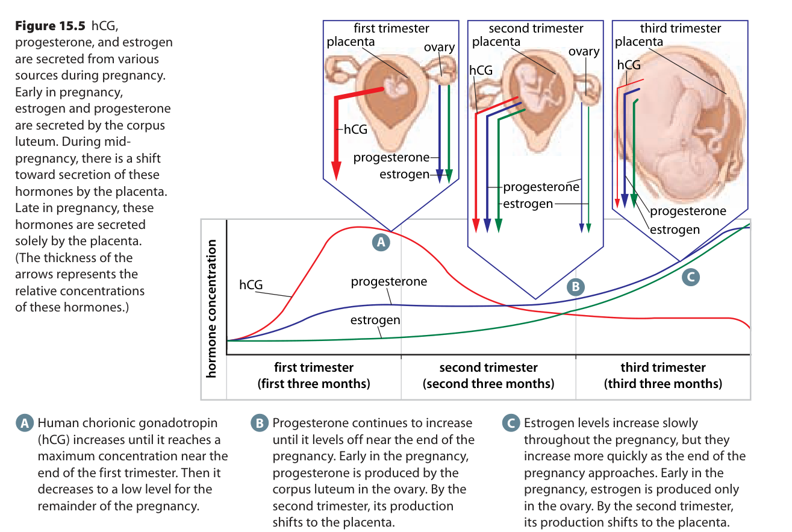

Learn · Chapter 15
How can a developing conceptus keep the uterine lining in place?
Learning goal
Trace hCG through the corpus luteum to progesterone and the endometrium, and explain the later placental contribution.
Before you begin
Without pregnancy support, the corpus luteum loses activity, ovarian hormone levels fall and menstruation follows.
Expected work: one completed lesson check. Supported practice, videos and textbook questions are optional. Saved writing is not automatically graded.
Chapter 15 · printed pp. 510–511
Key terms: · · ·
Key terms
Use these definitions when you need help with a term.
Implantation attaches a blastocyst to the endometrium, the inner lining of the uterus. The conceptus is the developing organism together with its associated membranes. That attachment occurs in tissue whose condition is controlled partly by hormones. To explain why the lining remains in place, start with what normally happens after ovulation.
The ovarian follicle that released the oocyte changes into the , a temporary hormone-producing structure in the ovary. Luteinizing hormone, or LH, from the anterior pituitary helps bring about ovulation and supports this ovarian structure. The corpus luteum releases and some estrogen. Progesterone helps maintain a secretory, well-supplied endometrium suitable for early development.
A hormone is a chemical message carried to responsive tissues. In this pathway, the ovary is the source of progesterone and the uterine lining is one of its targets. Their locations are different. Progesterone is not the lining itself, and the corpus luteum is not part of the blastocyst.
Without pregnancy-associated support, corpus-luteum activity declines. Its progesterone and estrogen output falls, and the endometrium loses the hormonal support that helped maintain it. Menstrual shedding follows. The important change is a fall in support, not a claim that the body suddenly contains no estrogen or progesterone anywhere. Early pregnancy needs to maintain the ovarian structure beyond its usual short period of activity.
is the outer cell layer of the blastocyst. As implantation develops, tissue derived from that layer releases human chorionic gonadotropin, abbreviated . In the early-pregnancy pathway, hCG travels through maternal blood and acts on the corpus luteum in the ovary. It helps keep that structure active, so the corpus luteum continues releasing progesterone and estrogen.
Read the steps in this order: trophoblast-derived tissue releases hCG; hCG supports the corpus luteum; the corpus luteum releases progesterone and estrogen; those ovarian hormones support the endometrium. The first hormone stimulates a tissue that produces further hormones. hCG does not change into progesterone, and it is not another name for it.
A target responds because it has functioning receptors, molecular structures that recognize the signal and begin a response. Having hCG in the blood and having responsive luteal cells are separate requirements. If a stated model makes the corpus luteum unable to respond, the normal downstream support cannot simply be assumed from the hCG concentration.
As the placenta develops, it becomes an increasingly important hormone-producing tissue. Production of progesterone shifts toward the placenta during the first trimester. Placental estrogen production also becomes substantial as pregnancy continues. Because the source of hormonal support changes, a fall in hCG from its early peak need not mean that progesterone support has ended.
The source figure below connects the changing sources above with hormone patterns below. Locate the ovary and placenta in each upper panel. Then follow the labelled hCG, progesterone and estrogen curves across the trimesters. Read each curve's change through time; the vertical axis has no numerical scale, so it cannot give an exact concentration or a reliable numerical comparison between different hormones.

[Figure: Textbook Figure 15.5 compares changing ovarian and placental hormone sources across three trimesters. In the qualitative graph, red hCG rises early then falls but remains present. Blue progesterone and green estrogen remain supported and later rise. The vertical axis is not numbered; this is not an individual patient record. | ./assets/figures/ch15-source-hormones-figure15-5.png]This textbook illustration is a simplified summary. The change toward placental progesterone production begins during the first trimester; it is not a switch that waits until the second trimester starts. The diagram's broad panels, arrow widths and caption should not be used as exact timing or as proof of an exclusive hormone source at every moment. The declining hCG curve also remains above zero.
Many urine pregnancy tests detect hCG. In the normal early-pregnancy pathway we have just traced, trophoblast-derived tissue provides that signal. Measuring the signal is different from observing the embryo or its location. Detectable hCG alone does not show that is in the usual uterine location or establish that development is proceeding normally.
The teacher source describes trophoblast as the only possible source of hCG. That is too absolute: small amounts of hCG can also occur outside pregnancy. Calling hCG a pregnancy-associated signal describes its role in the normal pathway and why pregnancy tests measure it. That label does not prove that a particular detected amount came from a normally located pregnancy. For this course, separate the biological pathway from the limits of a measurement. A stated laboratory result establishes what was detected in the sample; stronger conclusions require other evidence. Interpretation of a person's result belongs with a qualified health professional.
Apply the same care to a hormone graph. First identify the substance on each curve and the time scale. Describe what changes before proposing a cause. Then use the taught source–target relationship to explain how the pattern is possible. A schematic of typical trends is not an individual person's measured record.
The developing conceptus therefore has an early way to influence its environment: its signal supports an ovarian hormone source, which in turn supports the uterine lining. Later placental production changes the dependence on that ovarian source. We will next examine changes within the embryo itself as its cells become organized into tissue-forming layers.
The optional textbook filter also includes earlier fertilization questions and later questions on the amniotic cavity and germ layers. Revisit the earlier questions as review; return to the later ones after the matching teaching rather than assuming all belong to this hormone pathway.
Worked example
Use Figure 15.5 above. After the red hCG curve reaches its early high point, it declines while the blue progesterone curve remains elevated. A learner concludes, “Less hCG must mean that all progesterone support has stopped.” Does the evidence support that conclusion?
Now change a condition in a classroom model: hCG is present, but the corpus luteum's receptors cannot respond during the stage when ovarian support matters. Detecting hCG would no longer be enough to infer a normal luteal response. Trace the stated limitation through the chain before predicting the next hormone's effect; do not assume that a later placental contribution is already fully available.